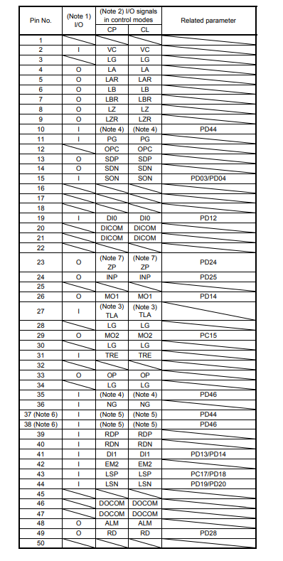
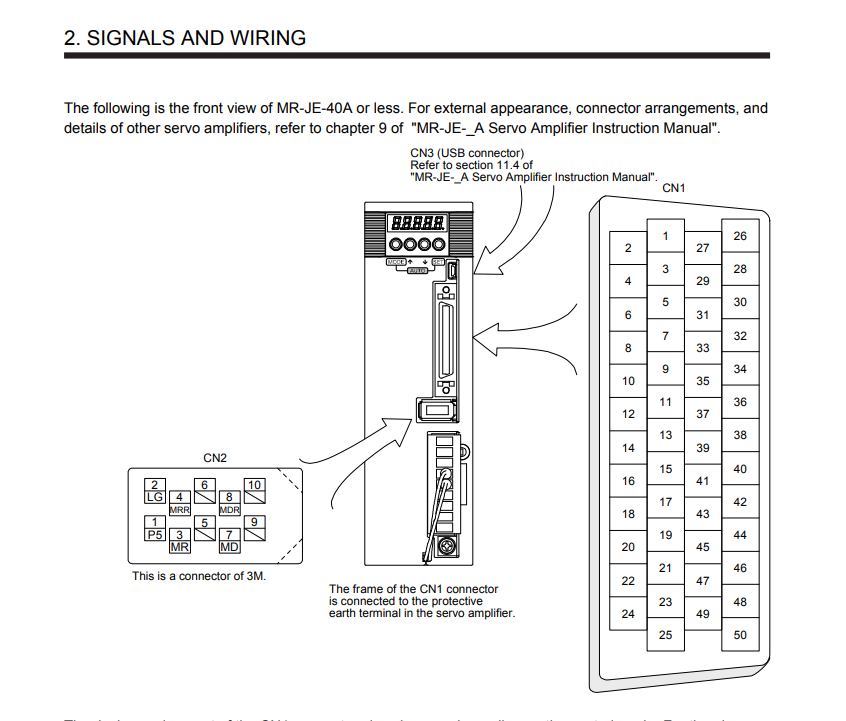
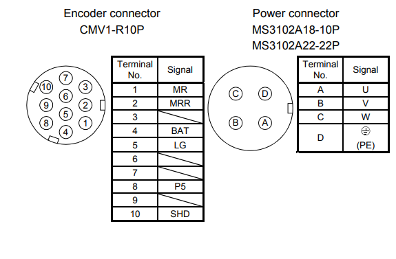

03. Сервоприводы Mitsubishi MR-JE-200A
HG-SN152J-S100. CN1 (50-pin). Питание цепей 24В. Step/Dir через MAX490. Оси Z и C.
CN1 — строго 50-контактный разъём (MIL-C-50)!
Все старые документы с 20-pin CN1 — недействительны. Единственный источник истины:
оригинальный мануал MR-JE-A из папки
Сервоприводы/. При сомнении — сверяться только с ним.
1. Спецификация оборудования
1.1. Серводрайвер MR-JE-200A
| Параметр | Значение |
|---|---|
| Модель | MR-JE-200A |
| Серия | Mitsubishi MR-JE-A (бюджетная, позиционное управление) |
| Мощность | 2 кВт (пиковый) |
| Питание | 1ф 200–240 В AC (L1/L2) или 3ф 200–240 В AC |
| Режим управления | Position mode (CP) — импульсы Step/Dir |
| Макс. частота Step/Dir | 500 кГц |
| Разъём управления | CN1 — 50 пинов (MIL-C-50) |
| Разъём энкодера | CN2 — 20 пинов (CMV1-R20P) |
| Питание дискретных входов | 12–26.4 В DC |
| Внутренние резисторы входов | ~6 кОм — внешние резисторы НЕ нужны! |
1.2. Серводвигатель HG-SN152J-S100
| Параметр | Значение |
|---|---|
| Модель | HG-SN152J-S100 |
| Мощность | 1.5 кВт |
| Номинальная скорость | 2000 об/мин |
| Максимальная скорость | 3000 об/мин |
| Номинальный момент | 7.16 Н·м |
| Пиковый момент | 21.5 Н·м (3× номинал) |
| Энкодер | 262 144 ppr (абсолютный, 18 бит, последовательный) |
| Фланец | 115 мм (NEMA 48) |
| Вал | Ø22 мм, шпонка |
| Тормоз | Нет (S100 = без тормоза) |
2. Эталонная распиновка CN1 (50-pin)
2.1. Ключевые рабочие пины — используются в проекте
| Пин | Сигнал | Напр. | Функция | Подключение |
|---|---|---|---|---|
| 10 | PP | Вход | STEP (+) — импульсы (High-speed, RS-422) | MAX490 TX+ → пин 10 |
| 11 | PG | Вход | STEP (−) — импульсы (High-speed, RS-422) | MAX490 TX− → пин 11 |
| 35 | NP | Вход | DIR (+) — направление (High-speed, RS-422) | MAX490 TX+ → пин 35 |
| 36 | NG | Вход | DIR (−) — направление (High-speed, RS-422) | MAX490 TX− → пин 36 |
| 15 | SON | Вход | Servo ON — разрешение работы серво | +24В от ПЛК DO7 (Z) / DO8 (C) |
| 19 | DI0 | Вход | EMG (по умолч.) — аварийный стоп | +24В → НЗ кнопка E-Stop → DI0 |
| 43 | LSP | Вход | Концевик прямого хода (+) | +24В → НЗ концевик → LSP |
| 44 | LSN | Вход | Концевик обратного хода (−) | +24В → НЗ концевик → LSN |
| 2 | VC | — | +5В источник (питание внешних оптопар) | Только 5В нагрузки |
| 3 | LG | — | Логическая земля | Общий сигнальной цепи |
| 20/21 | DICOM | — | Общий для дискретных входов (COM) | GND (Source mode) |
| 48 | ALM | Выход | Авария (Alarm output) | Подтяжка +24В/4.7 кОм |
| 49 | RD | Выход | Готов (Ready) | Подтяжка +24В/4.7 кОм |
| 24 | INP | Выход | В позиции (In-Position) | Подтяжка +24В/4.7 кОм |
| 46/47 | DOCOM | — | Общий для дискретных выходов | → GND |
2.2. Дополнительные пины (энкодерные выходы CN1)
| Пин | Сигнал | Функция |
|---|---|---|
| 4 | LA | Энкодер A-фаза (+) |
| 5 | LAR | Энкодер A-фаза (−) инверсный |
| 6 | LB | Энкодер B-фаза (+) |
| 7 | LBR | Энкодер B-фаза (−) инверсный |
| 8 | LZ | Энкодер Z-фаза (Index, +) |
| 9 | LZR | Энкодер Z-фаза (−) инверсный |
| 42 | EM2 | Forced Stop (принудит. остановка с замедлением) |
3. Подключение входов 24В (Source mode / PNP)
⚠️ Критично: сигнальный общий CN1 (0В) и PE (защитная земля) — не одно и то же.
Для входов SON/DI0/LSP/LSN используйте только 0В того же 24В БП, который питает цепь управления.
Внешние токоограничивающие резисторы НЕ нужны!
Внутри MR-JE-A на входах SON, DI0, LSP, LSN уже установлены резисторы ~6 кОм.
Подключение производится напрямую от 24В к пину, общий (GND) подключается на DICOM (пин 20/21).
Добавление внешних резисторов снизит ток до ~2.9 мА — это ниже порога оптопары (нужно ~5 мА)!
Внешний БП +24В (или +25В)
│
├──────[НЗ E-Stop] ──────────► DI0 (пин 19) ← EMG — обрыв = АВАРИЯ СТОП
├──────[НЗ концевик +] ───────► LSP (пин 43) ← Лимит вперёд
├──────[НЗ концевик −] ───────► LSN (пин 44) ← Лимит назад
└──────[ПЛК DO7/DO8 реле] ───► SON (пин 15) ← Серво разрешено (24В от ПЛК)
GND (от того же БП)
└──────────────────────────────► DICOM (пин 20 и 21) ← Общий входов (Source mode)
⚠ НЗ = нормально замкнутый контакт. Рабочее состояние = цепь ЗАМКНУТА.
Нажатие кнопки / срабатывание концевика → цепь РАЗОМКНУТА → СТОП.
Диагностика синего провода (SON):
в этой эталонной схеме (Source/PNP) при Servo ON на CN1 pin 15 должно быть около +24В относительно 0В.
Если там 0В, проверьте подачу +24В на DO7/DO8 и общий 0В на DICOM (20/21).
Проверка допустимости при 25В питании
| Параметр | Значение | Допуск (мануал) | Итог |
|---|---|---|---|
| Напряжение питания | 25 В | 12–26.4 В | ✓ В пределах |
| Ток через вход | 11.85 мА | 5–20 мА | ✓ Норма |
| Мощность на резисторе | 0.28 Вт | ≤0.25 Вт (типовой) | ⚠ Применить резисторы 0.5 Вт |
4. Подключение Step/Dir (RS-422, строго 5В)
⛔ КРИТИЧЕСКИ: пины 10, 11, 35, 36 — только RS-422 (5В)!
Запрещена подача 24В или 25В на импульсные входы PP, PG, NP, NG.
Подача 24В приведёт к немедленному выгоранию высокоскоростных оптопар CN1!
Стандарт: RS-422 дифференциальный, ±(2.5–5)В.
Схема подключения Teensy 4.1 → MAX490 → MR-JE-200A
Teensy 4.1 (3.3В) MAX490 (RS-422, 5В) MR-JE-200A CN1
────────────────── ───────────────── ──────────────
Vcc ← +5В
GND ← GND
Pin 2 (STEP_Z) ────────► A (вход TX)
Y ─────────────► пин 10 PP (STEP+)
Z ─────────────► пин 11 PG (STEP−)
Pin 3 (DIR_Z) ────────► A (вход TX) [второй MAX490]
Y ─────────────► пин 35 NP (DIR+)
Z ─────────────► пин 36 NG (DIR−)
Примечание: Teensy работает на 3.3В. Входная логика MAX490 — совместима с 3.3В.
Выходная линия MAX490 — RS-422 (5В дифференциальный). ТОЛЬКО ТАК.Назначение пинов Teensy 4.1 — обе оси
| Teensy пин | Функция | Подключение |
|---|---|---|
| Pin 2 | STEP_Z | MAX490 → CN1 пин 10 (PP) — драйвер #1 (ось Z) |
| Pin 3 | DIR_Z | MAX490 → CN1 пин 35 (NP) — драйвер #1 (ось Z) |
| Pin 4 | STEP_C | MAX490 → CN1 пин 10 (PP) — драйвер #2 (ось C) |
| Pin 5 | DIR_C | MAX490 → CN1 пин 35 (NP) — драйвер #2 (ось C) |
| Pin 6 | ЗАПАС | SON Z теперь через ПЛК DO7 → синий провод CN1 пин 15 |
| Pin 7 | ЗАПАС | SON C теперь через ПЛК DO8 → синий провод CN1 пин 15 |
| Pin 8 | ЗАПАС | Home Z — при необходимости |
| Pin 9 | ЗАПАС | Home C — при необходимости |
| Pin 10 | LIMIT_Z+ | Концевик прямого хода оси Z |
| Pin 11 | LIMIT_Z− | Концевик обратного хода оси Z |
4.1 Таблица распайки самодельного кабеля управления CN1 (LAN)
| Цвет жилы (LAN) | Пара | Пин CN1 | Сигнал | Функция | Куда идет на плате |
|---|---|---|---|---|---|
| Оранжевый | 1 | 10 | PP | Step + (Импульс +) | MAX490 №1 (выход Y) |
| Бело-Оранжевый | 1 | 11 | PG | Step - (Импульс -) | MAX490 №1 (выход Z) |
| Зеленый | 2 | 35 | NP | Dir + (Направление +) | MAX490 №2 (выход Y) |
| Бело-Зеленый | 2 | 36 | NG | Dir - (Направление -) | MAX490 №2 (выход Z) |
| Синий | 3 | 15 | SON | Servo-ON (Включение) | На ПЛК DO7 (Z) / DO8 (C) — 24В |
| Бело-Синий | 3 | 48 | ALM | Alarm (Ошибка) | На вход ПЛК / Тинси |
| Коричневый | 4 | 20 | DICOM | Плюс питания входов | +24В (от БП 60Вт) |
| Бело-Коричневый | 4 | 46 | DOCOM | Общий минус выходов | 0В (GND) (от БП 60Вт) |
| ЭКРАН (фольга) | — | Корпус | Shield | Заземление | Металлический кожух CN1 |
Показать схемы распиновки сервоприводов (CN1, CN2, Энкодер)
Распиновка CN1

Разъемы CN1 и CN2 (Общий вид MR-JE)

Круглый разъем мотора (HG-SN)

4.2 Подключение MAX490 и Teensy (со стороны шкафа)
Поскольку у нас 2 сервопривода (Ось Z и Ось C), используются два отдельных LAN-кабеля (по одному от каждого CN1) и 2 пары MAX490 (всего 4 платки).
LAN-кабель 1: Ось Z (Серводрайвер #1)
| Модуль | Клеммы MAX490 / Управление | Куда подключается к Teensy и LAN |
|---|---|---|
| Пара 1: MAX490 (Шаг Z) | DI (Вход) | Пин Teensy — Pin 2 (Step_Z) |
| Y (TX+ выход) | Оранжевый провод LAN #1 → (пин 10 CN1) | |
| Z (TX- выход) | Бело-оранжевый провод LAN #1 → (пин 11 CN1) | |
| VCC / GND | Питание 3.3V и GND от БП / Teensy | |
| Пара 1: MAX490 (Напр. Z) | DI (Вход) | Пин Teensy — Pin 3 (Dir_Z) |
| Y (TX+ выход) | Зеленый провод LAN #1 → (пин 35 CN1) | |
| Z (TX- выход) | Бело-зеленый провод LAN #1 → (пин 36 CN1) | |
| VCC / GND | Питание 3.3V и GND от БП / Teensy | |
| SON (Ось Z) | Синий провод | ПЛК DO7 (+24В релейный выход) → CN1 пин 15 (SON) |
LAN-кабель 2: Ось C (Серводрайвер #2)
| Модуль | Клеммы MAX490 / Управление | Куда подключается к Teensy и LAN |
|---|---|---|
| Пара 2: MAX490 (Шаг C) | DI (Вход) | Пин Teensy — Pin 4 (Step_C) |
| Y (TX+ выход) | Оранжевый провод LAN #2 → (пин 10 CN1) | |
| Z (TX- выход) | Бело-оранжевый провод LAN #2 → (пин 11 CN1) | |
| VCC / GND | Питание 3.3V и GND от БП / Teensy | |
| Пара 2: MAX490 (Напр. C) | DI (Вход) | Пин Teensy — Pin 5 (Dir_C) |
| Y (TX+ выход) | Зеленый провод LAN #2 → (пин 35 CN1) | |
| Z (TX- выход) | Бело-зеленый провод LAN #2 → (пин 36 CN1) | |
| VCC / GND | Питание 3.3V и GND от БП / Teensy | |
| SON (Ось C) | Синий провод | ПЛК DO8 (+24В релейный выход) → CN1 пин 15 (SON) |
Общие жилы (питание и ошибки) — для ОБОИХ кабелей:
- Коричневый провод — к БП +24В (вход DICOM пин 20).
- Бело-коричневый провод — к БП 0В / GND (выход DOCOM пин 46 и земля реле).
- Бело-синий провод — к входам Teensy / ПЛК (ALM) подтяжка 4.7кОм к 24В.
- ЭКРАН — обязательно на корпус шкафа (PE) со стороны шкафа (не у мотора).
5. Параметры серводрайвера (Pr.)
| Параметр | Значение | Описание |
|---|---|---|
| Pr.PA01 | 0000 | Режим управления: Position (Step/Dir, CP mode) |
| Pr.PD01 | 1000 | Конфигурация входного фильтра — УСТРАНЯЕТ AL.E6.1! |
| Pr.PA06 | 1 | Электронный редуктор: числитель. PA06/PA07=1/1 → 262144 имп/оборот |
| Pr.PA07 | 1 | Электронный редуктор: знаменатель |
| Pr.PD03 | (умолч.) | Назначение SON на пин 15 (по умолчанию) |
| Pr.PD12 | (умолч.) | DI0 (пин 19) = EMG — аварийный стоп (по умолчанию) |
| Pr.PD18 | (умолч.) | LSP на пин 43 (по умолчанию) |
| Pr.PD20 | (умолч.) | LSN на пин 44 (по умолчанию) |
| Pr.PD24 | 1 | Режим сигнала SON: 1 = по уровню (держать +24В = серво ON) |
| Pr.PA14 | 10 | ID привода (для идентификации, необязательно) |
Электронный редуктор (PA06 / PA07)
Вариант A — максимальная точность:
PA06=1, PA07=1 → 262 144 имп. на оборот (используется разрешение 18 бит)
Вариант B — удобные числа для Teensy:
PA06=10000, PA07=262144 → 10 000 имп. на оборот (проще считать позицию)6. Подключение CN2 (энкодер двигателя)
Мотор HG-SN [разъём круглый CMV1-R10P] Усилитель MR-JE-200A [CN2]
────────────────────────────────────── ──────────────────────────
Пин 8 P5 (+5В) ────────────────────────► CN2 пин 1 P5
Пин 5 LG (GND) ────────────────────────► CN2 пин 2 LG
Пин 1 MR (Data+) ───────────────────────► CN2 пин 3 MR (витая пара!)
Пин 2 MRR (Data−) ──────────────────────► CN2 пин 4 MRR (витая пара!)
Корпус + пин 10 SHD ─────────────────────► Корпус CN2 (экран)
Кабель: экранированный. MR/MRR — в одной витой паре.
Питание (+5В): несколько проводов в параллели (снизить падение напряжения).7. Минимальное подключение CN1 для тестового JOG-режима
До подключения Teensy — проверить серво в JOG-режиме через MR Configurator2 (ПК → USB-B → драйвер). Достаточно подключить только:
+25В ────────► SON (пин 15) Servo ON
+25В ────────► DI0 (пин 19) EMG разрешён (или перемычка +25В)
+25В ────────► LSP (пин 43) Концевик + (или перемычка +25В)
+25В ────────► LSN (пин 44) Концевик − (или перемычка +25В)
GND ────────► DICOM (пин 20) Общий входов (Source mode)
Пины 10, 11, 35, 36 (Step/Dir) — НЕ ПОДКЛЮЧАТЬ.
Результат: дисплей показывает d01 → d09 (серво ON, готов к работе).8. Устранение аварии AL.E6.1
AL.E6.1 — серво выключается при движении / некорректный порядок сигналов
- Убрать все сигналы Step/Dir с пинов 10, 11, 35, 36 (отключить временно).
- Убедиться в правильном подключении: DICOM (20/21) = 0В, DI0 (19) = +24В, LSP (43) = +24В, LSN (44) = +24В, SON (15) = +24В.
- Установить параметр Pr.PD01 = 1000 через панель или MR Configurator2.
- Сбросить аварию: кнопка SET/RESET на панели или через MR Configurator2.
- Дождаться
d09на дисплее (серво готово). - Только после
d09— подавать Step/Dir сигналы.
9. Таблица кодов аварий MR-JE-200A
| Код | Описание | Решение |
|---|---|---|
| AL.10 | Пониженное напряжение питания | Проверить L1/L2, автомат 16А |
| AL.16 | Ошибка энкодера CN2 | Проверить кабель CN2, распиновку, витую пару MR/MRR |
| AL.19 | Перегрузка по току | Проверить U/V/W, снизить нагрузку, ускорение |
| AL.32 | Превышение ошибки позиции | Снизить ускорение, увеличить усиление |
| AL.37 | Ошибка EMG (нет сигнала) | Подключить DI0 (пин 19) к +24В через НЗ цепь |
| AL.E6 / AL.E6.1 | Серво выкл. при движении / некорр. порядок | Pr.PD01=1000, подать SON до Step/Dir, см. п.8 |